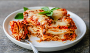

Lasagna

Description
Lasagna, also known as lasagne (Italian) is a type of pasta, possibly one of the oldest types,made in very wide, flat sheets. The same-named Italian dish is made of stacked layers of lasagna alternating with fillings such as ragù (ground meats and tomato sauce), béchamel sauce, vegetables, cheeses (which may include ricotta, mozzarella and Parmesan), and seasonings and spices.
The dish may be topped with grated cheese, which becomes melted during baking. Typically cooked pasta is assembled with the other ingredients and then baked in an oven (al forno). The resulting baked pasta is cut into single-serving square or rectangular portions.
Ingredients
- 1 1/2 lb. ground beef
- 1 lb. hot breakfast sausage
- 2 cloves garlic, minced
- 2 (14.5-oz.) cans whole tomatoes
- 2 (6-oz.) cans tomato paste
- 4 Tbsp. dried parsley, divided
- 2 Tbsp. dried basil
- 2 1/2 tsp. salt
- 3 c. low-fat cottage cheese
- 2 eggs, beaten
- 1/2 c. grated (not shredded) parmesan cheese
- 1 Tbsp. olive oil
- 1 (1o-oz.) package lasagna noodles
- 1 lb. sliced mozzarella cheese
Steps to follow:
- Boil pasta: In a large pot of salted water boil lasagna noodles per the recipe below.
- Prepare meat sauce: Cook sausage and beef with onion and garlic. Drain well, add the pasta sauce (I love this brand) & simmer it for a few minutes to thicken.
- Combine cheese mixture: Stir the cheese mixture together in a bowl.
- Layer & bake: Layer the meat sauce and cheese mixture with lasagna noodles and bake until the top of the lasagna is golden brown.